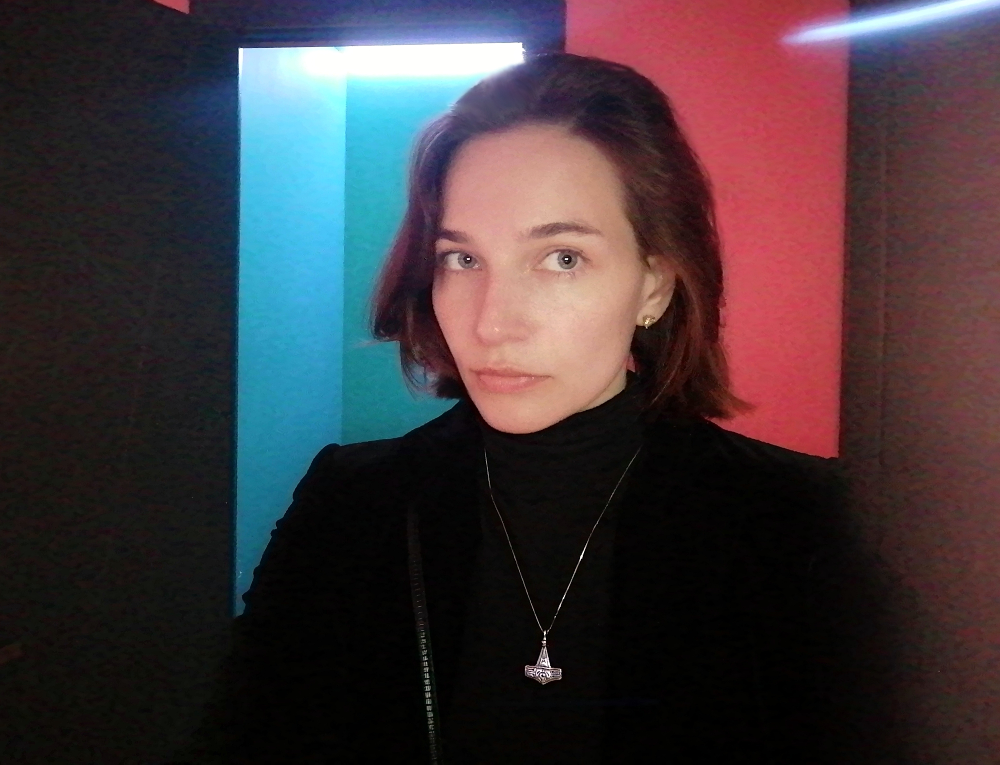

Обо мне
В 1989 родилась в Снежинске (Челябинская область);
1995-2006: жила и училась в Брянске;
2006-2010: жила и училась в Праге (Чешская республика);
2010-2012: жила и работала в Сплите (Хорватская республика);
2012-2013: жила и работала в Москве;
2013-2014: жила и работала в Краснодаре;
C 2014 по настоящее время живу и работаю в Брянске.
В 2022 вышла замуж. Воспитываю маленького кане-корсо по имени Фиби.
Увлечения
Коллажи и флюид арт;
Шоппинг на Ozon.ru;
Арт-хаус и психологические триллеры;
Сексология и психология;
Путешествия;
Музеи, выставки, театр.
Образование
1996-1998: Школа №46 (Брянск);
1998-2006: Гимназия №7 (Брянск);
2006-2007: UJOP Univerzity Karlovy (Прага);
2007-2010: SVOŠUR Orange Factory (Прага);
2022-2023: Skillfactory (Москва).
Опыт работы
2020-2022: Менеджер соцсетей кафе Вкусь (Брянск);
2014-2020: Турагент в турагентстве Экспресс Трэвел (Брянск);
2016-2017: Страховой агент в РЕСО-Гарантия (Брянск);
2013-2014: Продавец сим-карт и модемов в Ростелеком (Краснодар);
2012-2013: Бариста в кафе Туиль (Москва).
Как я стала разработчиком
- HTML5 - старт 20.12.2022;
- CSS3 - старт 02.01.2023;
- JS - старт 06.02.2023;
- React - старт 24.04.2023;
- Vue.JS - старт 12.06.2023.